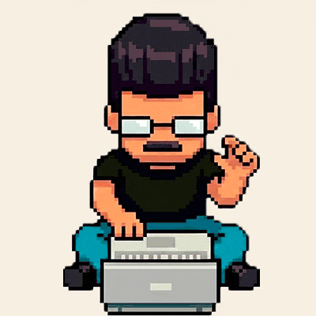

Content Strategist · Digital Journalist · LATAM
Jornalista e estrategista de conteúdo com mais de 14 anos de experiência em mídia digital, comunicação corporativa e cultura pop. Hoje liderando estratégias para Intel e Coca-Cola na Burson Global (WPP).
Journalist and content strategist with 14+ years of experience in digital media, corporate communications, and pop culture. Currently leading strategies for Intel and Coca-Cola at Burson Global (WPP).
Periodista y estratega de contenido con más de 14 años de experiencia en medios digitales, comunicación corporativa y cultura pop. Actualmente liderando estrategias para Intel y Coca-Cola en Burson Global (WPP).
Vamos conversar → Let's talk → Hablemos →
Fábio Devito é jornalista, estrategista de conteúdo digital.
Fábio Devito is a journalist and digital content strategist.
Fábio Devito es periodista y estratega de contenido digital.
Desde 2012, navega entre o jornalismo digital, a comunicação corporativa e a publicidade. Neste período, cobriu hard news no G1 e tecnologia no Olhar Digital, e, hoje, atua como Estrategista Digital para marcas globais, unindo dados, criatividade e storytelling.
Since 2012, he has navigated between digital journalism, corporate communications, and advertising. During this time, he covered hard news at G1 and technology at Olhar Digital — and today works as a Digital Strategist for global brands, combining data, creativity, and storytelling.
Desde 2012, navega entre el periodismo digital, la comunicación corporativa y la publicidad. En este período, cubrió hard news en G1 y tecnología en Olhar Digital, y hoy trabaja como Estratega Digital para marcas globales, uniendo datos, creatividad y storytelling.
Membro do Innovation Hub da Burson, contribui para o desenvolvimento de estratégias de conteúdo e gestão de comunidade para Intel e Coca-Cola no Brasil e LATAM. Lançou e gerenciou o Instagram da Intel na América do Sul, participando de equipes multidisciplinares e conduzindo coberturas em tempo real em eventos como Brasil Game Show e Intel Extreme Masters.
Member of Burson's Innovation Hub, contributes to content strategy development and community management for Intel and Coca-Cola across Brazil and LATAM. Launched and managed Intel's Instagram for South America, participating in cross-functional teams and driving real-time coverage at events like Brasil Game Show and Intel Extreme Masters.
Miembro del Innovation Hub de Burson, contribuye al desarrollo de estrategias de contenido y gestión de comunidad para Intel y Coca-Cola en Brasil y LATAM. Lanzó y gestionó el Instagram de Intel en América del Sur, participando en equipos multidisciplinarios y conduciendo coberturas en tiempo real en eventos como Brasil Game Show e Intel Extreme Masters.
Liderou projetos de branded content e podcasts corporativos para marcas internacionais. Gerenciou roteiros, cronogramas e fornecedores, desenvolvendo narrativas criativas para fortalecer o engajamento de comunidades.
Led branded content and corporate podcast projects for international brands. Managed scripting, timelines, and vendor relations, crafting creative narratives to strengthen community engagement and brand positioning.
Lideró proyectos de branded content y podcasts corporativos para marcas internacionales. Gestionó guiones, cronogramas y proveedores, desarrollando narrativas creativas para fortalecer el engagement de comunidades.
Cobriu o auge da pandemia de COVID-19, gerenciando conteúdo jornalístico para 53 cidades do interior de São Paulo. Artigos com circulação nacional referenciados no Jornal Nacional, Bom Dia Brasil e Bom Dia São Paulo.
Covered the peak of the COVID-19 pandemic, managing news content for 53 cities across the interior of São Paulo. Articles gained national circulation, referenced on Jornal Nacional, Bom Dia Brasil, and Bom Dia São Paulo.
Cubrió el pico de la pandemia de COVID-19, gestionando contenido periodístico para 53 ciudades del interior de São Paulo. Artículos con circulación nacional referenciados en Jornal Nacional, Bom Dia Brasil y Bom Dia São Paulo.
Cobriu editorias mobile, realizou análises e reviews de produtos e fez cobertura remota de eventos como CES, Apple e Samsung. Também foi repórter chave na cobertura da invasão ao Capitólio dos EUA (2021) e produziu investigação sobre vulnerabilidade no aplicativo Conecta SUS.
Covered mobile product editorials, conducted product analyses and reviews, and remotely covered events including CES, Apple, and Samsung launches. Key reporter on the U.S. Capitol riot (2021) and produced an investigative report exposing a security vulnerability in the Conecta SUS app during the pandemic.
Cubrió editoriales mobile, realizó análisis y reviews de productos y cubrió remotamente eventos como CES, Apple y Samsung. También fue reportero clave en la cobertura del asalto al Capitolio de EE.UU. (2021) y produjo investigación sobre vulnerabilidad en la app Conecta SUS.
Gerenciou comunidades digitais e campanhas de mídia paga (Meta, Google Ads) com foco em aquisição, retenção e melhora de CAC e ROI.
Managed digital communities and paid media campaigns (Meta, Google Ads) focused on user acquisition, retention, and improving CAC and ROI metrics.
Gestionó comunidades digitales y campañas de medios pagos (Meta, Google Ads) con foco en adquisición, retención y mejora de CAC y ROI.
Co-desenvolveu o novo portal de notícias (arquitetura de conteúdo, UX, SEO). Dirigiu o documentário web "Luta e Resistência", competidor na categoria melhor curta no festival de Votorantim-SP.
Co-developed the news portal redesign (content architecture, UX, SEO). Directed the web documentary "Luta e Resistência", which competed for best short film at the Votorantim-SP festival.
Co-desarrolló el nuevo portal de noticias (arquitectura de contenido, UX, SEO). Dirigió el documental web "Luta e Resistência", competidor en la categoría mejor cortometraje en el festival de Votorantim-SP.
Gestão de assessoria de imprensa e conteúdo institucional para o Consulado Geral de Portugal em São Paulo.
Managed press relations and institutional content for the Consulate General of Portugal in São Paulo.
Gestión de relaciones con la prensa y contenido institucional para el Consulado General de Portugal en São Paulo.
Liderou o lançamento do Instagram da Intel para América Latina do zero — do conceito à estratégia de crescimento com audiências engajadas. Desenvolveu a estratégia de comunicação da marca em eventos como Brasil Game Show, CES, Intel Extreme Masters, Intel Gamer Days e Gamescom. Trabalhou ao lado de marcas parceiras como Asus, Dell, Acer, Mercado Livre, Amazon, Ubisoft, PlayStation e Gamers Club.
Led the launch of Intel's Instagram for Latin America from scratch — from concept to a growth strategy with engaged audiences. Developed the brand's communication strategy at events such as Brasil Game Show, CES, Intel Extreme Masters, Intel Gamer Days, and Gamescom. Worked alongside partner brands including Asus, Dell, Acer, Mercado Livre, Amazon, Ubisoft, PlayStation, and Gamers Club.
Lideró el lanzamiento del Instagram de Intel para América Latina desde cero — del concepto a la estrategia de crecimiento con audiencias comprometidas. Desarrolló la estrategia de comunicación de la marca en eventos como Brasil Game Show, CES, Intel Extreme Masters, Intel Gamer Days y Gamescom. Trabajó junto a marcas socias como Asus, Dell, Acer, Mercado Libre, Amazon, Ubisoft, PlayStation y Gamers Club.
Participou do desenvolvimento da estratégia de cobertura e do planejamento de conteúdo para o tour global do troféu da Copa do Mundo da FIFA com a The Coca-Cola Company. Operações de alto impacto em São Paulo, Rio de Janeiro e Brasília, gerenciando ativações com os embaixadores Denilson e Cafu e integrando equipes multidisciplinares da América Latina.
Contributed to the coverage strategy and content planning for the global FIFA World Cup Trophy Tour with The Coca-Cola Company. High-impact operations across São Paulo, Rio de Janeiro, and Brasília, managing activations with ambassadors Denilson and Cafu and integrating multidisciplinary teams across Latin America.
Participó en el desarrollo de la estrategia de cobertura y planificación de contenido para el tour global del trofeo de la Copa del Mundo de la FIFA con The Coca-Cola Company. Operaciones de alto impacto en São Paulo, Río de Janeiro y Brasilia, gestionando activaciones con los embajadores Denilson y Cafu e integrando equipos multidisciplinarios de América Latina.
Cobertura jornalística do auge da COVID-19 no interior paulista. Artigos com alcance nacional citados no Jornal Nacional, Bom Dia Brasil e Bom Dia São Paulo.
Journalistic coverage of COVID-19's peak across the interior of São Paulo. Articles reached national audiences, cited on Jornal Nacional, Bom Dia Brasil, and Bom Dia São Paulo.
Cobertura periodística del pico de COVID-19 en el interior de São Paulo. Artículos con alcance nacional citados en Jornal Nacional, Bom Dia Brasil y Bom Dia São Paulo.
Reportagem investigativa no Olhar Digital que expôs riscos de segurança no Conecta SUS, utilizado por médicos para prescrição durante a pandemia.
Investigative report at Olhar Digital exposing security risks in the Conecta SUS app, used by doctors to prescribe medications during the pandemic.
Reportaje investigativo en Olhar Digital que expuso riesgos de seguridad en el Conecta SUS, utilizado por médicos para prescribir durante la pandemia.
Cobertura e ativação de marca em tempo real no maior festival gamer da América Latina e no maior torneio de CS do mundo.
Real-time brand coverage and activation at the largest gaming festival in Latin America and the world's biggest CS tournament.
Cobertura y activación de marca en tiempo real en el mayor festival gamer de América Latina y el mayor torneo de CS del mundo.
Direção de documentário web sobre relações de trabalho para pessoas trans — competiu na categoria melhor curta no festival de Votorantim-SP.
Directed a web documentary on labor relations for transgender people, competing for best short film at the Votorantim-SP film festival.
Dirección de documental web sobre relaciones laborales para personas trans — compitió en la categoría mejor cortometraje en el festival de Votorantim-SP.
Pronto para criar histórias que importam.
Ready to craft stories that matter.
Listo para crear historias que importan.
Aberto a projetos, colaborações e oportunidades em comunicação, conteúdo e estratégia digital.
Open to projects, collaborations, and opportunities in communications, content, and digital strategy.
Abierto a proyectos, colaboraciones y oportunidades en comunicación, contenido y estrategia digital.